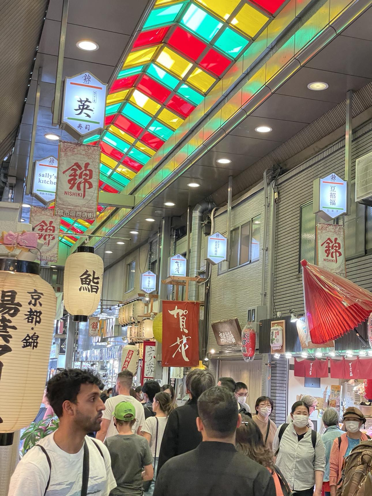
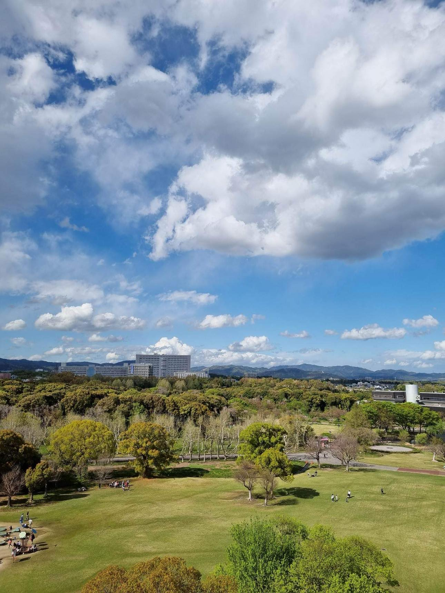

Traveling to Tokyo immerses you in a dynamic blend of ancient traditions and modern innovation. Explore Harry Potter land in Universal Studio Japan, temples and festivals in the exciting streets of this captivating city. Tokyo is an unforgettable adventure, offering an experience that's both culturally rich and fun!

